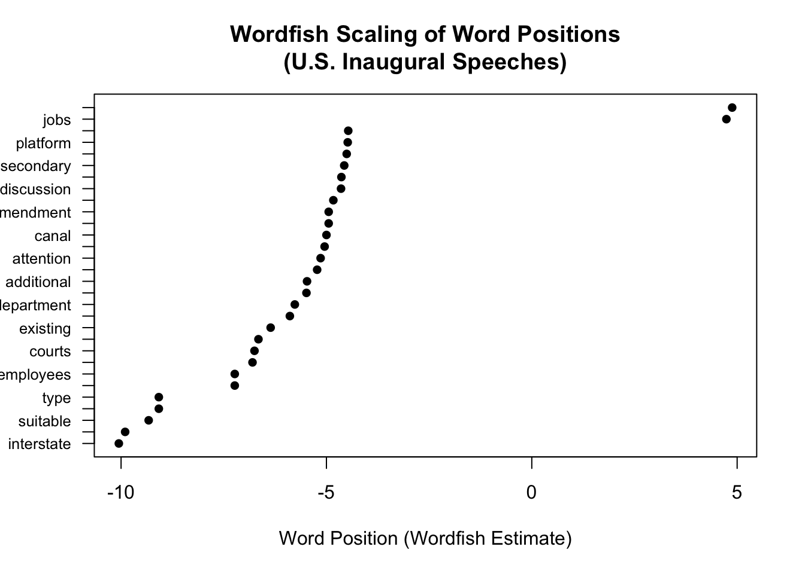

As a note, some of the content below was aided by the use of AI.
1. Read tutorial
of quanteda at https://tutorials.quanteda.io/
2. Download
quanteda_textanalytics01.R from Teams
It is copied and run below.
# Sample program for using quanteda for text modeling and analysis# Use vignette("auth", package = "rtweet") for authentication# Documentation: vignette("quickstart", package = "quanteda")# Website: https://quanteda.io/#install.packages(c("quanteda","quanteda.textmodels","quanteda.textstats","quanteda.textplots"))library(quanteda)
See https://quanteda.io for tutorials and examples.
library(quanteda.textmodels)library(quanteda.textplots)library(readr)library(ggplot2)# Twitter data about President Biden and Xi summit in Novemeber 2021# Do some background search/study on the event# summit <-read_csv("https://raw.githubusercontent.com/datageneration/datamethods/master/textanalytics/summit_11162021.csv")
Rows: 14520 Columns: 90
── Column specification ────────────────────────────────────────────────────────
Delimiter: ","
chr (50): screen_name, text, source, reply_to_screen_name, hashtags, symbol...
dbl (26): user_id, status_id, display_text_width, reply_to_status_id, reply...
lgl (10): is_quote, is_retweet, quote_count, reply_count, ext_media_type, q...
dttm (4): created_at, quoted_created_at, retweet_created_at, account_create...
ℹ Use `spec()` to retrieve the full column specification for this data.
ℹ Specify the column types or set `show_col_types = FALSE` to quiet this message.
# Wordcloud# based on US presidential inaugural address texts, and metadata (for the corpus), from 1789 to present.dfm_inaug <-corpus_subset(data_corpus_inaugural, Year <=1826) %>%tokens(remove_punct =TRUE) %>%tokens_remove(stopwords("english")) %>%dfm() %>%dfm_trim(min_termfreq =10, verbose =FALSE)set.seed(100)textplot_wordcloud(dfm_inaug)
All of the analyses are run above. Please refer to that for these responses.
a. Biden-Xi summit data
For the top tags in the document feature matrix, the primary topics other than the participants and their countries were corona virus, and fentanyl.
Looking at the two feature concurrence matrices,
FCM1
#breaking and #breakingnews co-occur with #biden, #china, and #usa moderately (values between 4 and 5).
#biden and #china co-occur heavily, particularly #biden + #china = 443 times, and #china + #usa = 76 times, suggesting a strong relationship.
#pray4america doesn’t seem to co-occur with any other terms.
#biden and #china seem to be central, with #usa being smaller.
FCM2
This matrix deals with more specific terms: #joebiden, #xijinping, #america, #americans.
#biden and #china both strongly co-occur with #joebiden, #xijinping, #america, and #americans. Notably:
#china + #xijinping = 434 times
#biden + #xijinping = 370 times
#usa and #pray4america have very weak connections in this matrix (almost all zeros or low numbers).
Looking at the network plot of the feature concurrence matrix, #fentanyl, #biden / #joebiden, #american(s), #xijinping and # coronavirus are strongly associated.
For the FCM of the user DFM, there were few associations between people.
In the text plot, there were a couple of echo-chambers worth noticing, but they likely had little or nothing to do with Biden/ Xi.
b. US presidential inaugural speeches
In the inaugural speeches, the major features of the speeches centered around government, country, people and similar topics.
Breaking this down by president, Trump and Obama had more to say about america(n) than Bush and Biden, who more touted freedom and democracy.
i. Any similarities and differences over time and among presidents?
Looking at the combined lexical dispersion plot for all the presidents, most, except Kennedy peppered their speeches with american and people, but few used trade. It does not appear that there are obvious patterns without further statistical analysis.
Except for Bush, presidents mentioned people. There may have been an increase in the use of american with Trump and Biden.
4. What is Wordfish?
From https://tutorials.quanted.io
“Wordfish is a Poisson scaling model of one-dimensional document positions (Slapin and Proksch 2008). Wordfish also allows for scaling documents, but in comparison to Wordscores, reference scores/texts are not required. Wordfish is an unsupervised one-dimensional text scaling method, meaning that it estimates the positions of documents solely based on the observed word frequencies.”
Wordfish is an unsupervised scaling method.
5. How to compare positions (hint: wordfish and scaling methods)
Start with an DFM.
Use Wordfish to model word counts based on:
α (document fixed effect) – controls for length of the document.
β (word fixed effect) – controls for how common a word.
θ (document position) – the position of the document on the latent scale (this is what you’re looking for).
ψ (word discrimination parameter) – shows how a word is associated with different positions.
The following objects are masked from 'package:stats':
filter, lag
The following objects are masked from 'package:base':
intersect, setdiff, setequal, union
# U.S. inaugural speeches (post-1900)data("data_corpus_inaugural")corpus <-corpus_subset(data_corpus_inaugural, Year >1900)# Tokenize the corpus, remove punctuation and stopwordstoks <-tokens(corpus, remove_punct =TRUE)toks <-tokens_remove(toks, stopwords("en"))# Create document-feature matrix and trim low-frequency termsdfm <-dfm(toks)dfm <-dfm_trim(dfm, min_termfreq =5)# Apply the Wordfish model using quanteda.textmodels with a directional anchorwf_model <-textmodel_wordfish(dfm, dir =c(1, 2))# Extract word-level beta estimates (using margin = "features") and convert to numericword_pos <-data.frame(word =featnames(dfm),beta =as.numeric(coef(wf_model, margin ="features")))# For a clearer plot, select the top 30 words with the most extreme beta valuesword_pos <- word_pos %>%arrange(desc(abs(beta))) %>%head(30) %>%arrange(beta)# Base R plot of word positionsplot(word_pos$beta, 1:nrow(word_pos),pch =16,xlab ="Word Position (Wordfish Estimate)",ylab ="",main ="Wordfish Scaling of Word Positions\n(U.S. Inaugural Speeches)",yaxt ="n") # suppress default y-axis labels# Add custom y-axis with word labelsaxis(2, at =1:nrow(word_pos), labels = word_pos$word, las =1, cex.axis =0.8)

6. Create a corpus
using government documents selected from the govinfo.gov website (use sample program govtdata01.R)
This creates a smaller corpus because it will be run every time quarto is rendered.
── Column specification ────────────────────────────────────────────────────────
Delimiter: ","
chr (8): collection, packageId, granuleId, title, detailsLink, pdfLink, htm...
dbl (1): index
lgl (4): xmlLink, otherLink1, otherLink2, historical
date (1): publishdate
ℹ Use `spec()` to retrieve the full column specification for this data.
ℹ Specify the column types or set `show_col_types = FALSE` to quiet this message.
#summary(govfiles1)print(govfiles1)
# A tibble: 3 × 14
index collection packageId granuleId title detailsLink pdfLink htmlLink
<dbl> <chr> <chr> <chr> <chr> <chr> <chr> <chr>
1 1 Federal Register FR-2024-1… 2024-234… Cert… https://ww… https:… https:/…
2 2 Federal Register FR-2024-1… 2024-272… Milk… https://ww… https:… https:/…
3 3 Federal Register FR-2024-0… 2024-147… Milk… https://ww… https:… https:/…
# ℹ 6 more variables: xmlLink <lgl>, otherLink1 <lgl>, otherLink2 <lgl>,
# teaser <chr>, historical <lgl>, publishdate <date>
# Preparing for bulk download of government documentsgovfiles1$id = govfiles1$packageIdpdf_govfiles_url = govfiles1$pdfLinkpdf_govfiles_id <- govfiles1$idpdf_govfiles_id